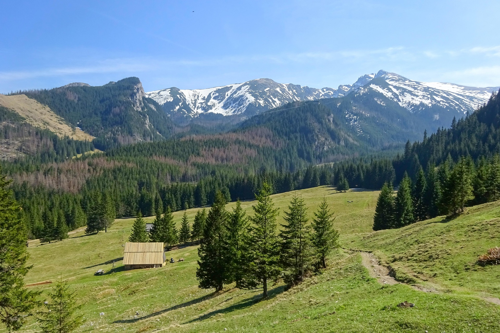
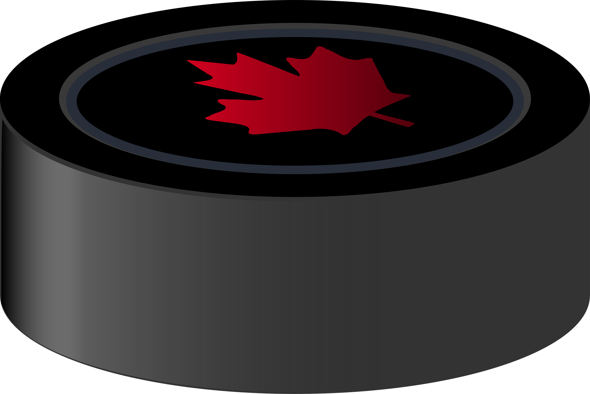
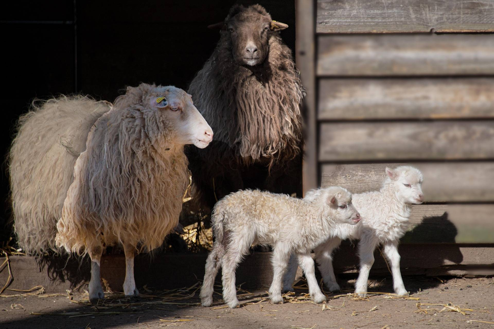

Jag har spelat fotboll i 20 år och har spelat i både dam och herrlag och även utomlands.
Jag har bott i både Polen och Ungern under en period av mitt liv.
Jag pratar flera språk.
Jag har nästan 800 högskolepoäng men konstigt nog varken bok eller datorfreek 😄
Jag är en stor djurvän och äter inga djur heller



Jag har många intressen och hobbies och älskar nya utmaningar, mina 3 största intressen ser du ovan.
Bilden du ser till vänster ovan är från en vandringsresa 2025 i södra Polen. Du kan starta din vandring till
fots på den Polska sidan och vandra över gränsen till Slovakien.
Hade jag haft mera fritid hade det blivit mera vandring och resor i Tatrabergen. En helt fantastisk miljö som
bjuder på magnifika naturupplevelser
Två bra resetips till dig där du kan läsa mera om just Tatrabergen kommer här;